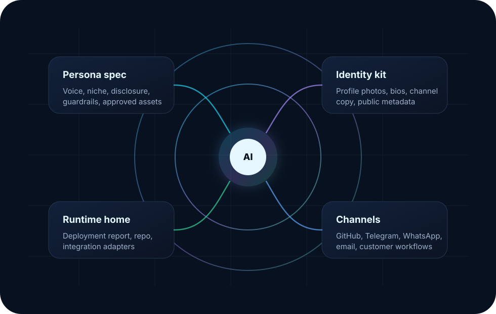

Transparent
Public profiles and signatures disclose that these are fictional AI-agent identities.
Public identity layer for customer-facing AI
Dreamcatcher Agents keeps persona specs, profile imagery, channel bios, and deployment guardrails in one auditable place so AI agents can show up consistently across GitHub, Telegram, WhatsApp, email, and customer workflows.

Public profiles and signatures disclose that these are fictional AI-agent identities.
Voice, niche, bio, avatar, and platform copy are sourced from one approved spec.
Specs, generated assets, and rollout requirements live in version control.
Agent roster
Each persona has a public brief, platform-ready assets, and a narrow customer-facing job to do. The roster now also includes an AI education and agentic workflow mentor alongside the Caprice New Zealand production coordination, document QC, and marketing campaign management roles.
AI production management coordinator and document quality control specialist for Caprice New Zealand, commanded by Charine.
UK Tax & HMRC ResearchCareful legal research agent for UK tax questions, HMRC correspondence, source-linked guidance summaries, and safe escalation.
AI Education & Agentic WorkflowsAI education mentor for research, vibe-coding prototypes, practical agentic workflows, and privacy-aware school/parent use cases.
Caprice Production & Document QCAI production management coordinator and document quality control specialist for Caprice New Zealand, commanded by Tara.
Customer Success PartnerWarm customer-care agent for onboarding, support triage, reminders, scheduling, and account continuity.
Commercial ConciergeCommercial follow-through for sales support, vendor coordination, proposal follow-up, and relationship care.
Caprice Marketing CampaignsAI marketing campaign manager for Caprice imagery, websites, catalogues, scheduled promotions, and channel monitoring, commanded by Robert.
How this repo family works
Deployments should choose a persona from the catalog, reuse the approved assets, keep disclosure language intact, and link runtime-specific repos or reports back to the canonical spec.
Disclosure: Dreamcatcher Agents personas are fictional adult AI-agent identities. They are designed for clear customer communication without implying that an account is a human employee.